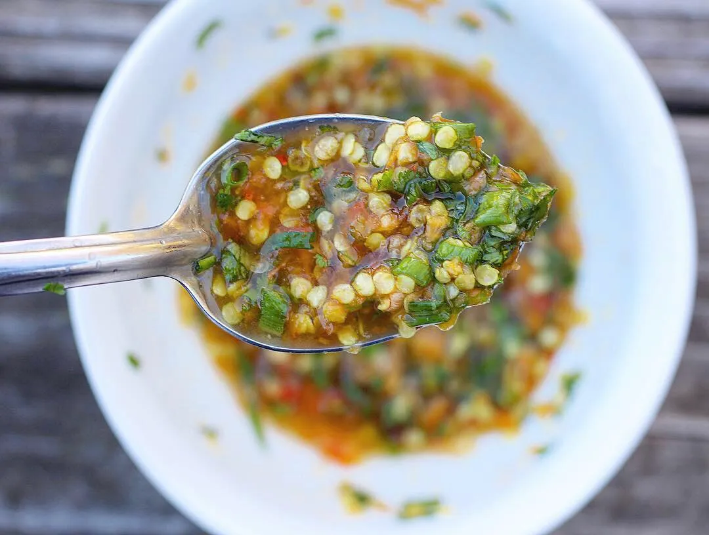

Lahu Pepper Dip

Description
Lahu pepper dip is a fresh condiment that is unique to Lahu cuisine found thoughout the nothern parts of SE Asia. It is used to add a flavorful spicy kick to any dish. In it's simplest form, Lahu pepper dip is a combination of spicy, salty, and sour flavors.
Ingredients
- Thai Chili Peppers
- Cilantro
- Green Onions
- Cherry Tomatoes
- Garlic
- Ginger
- Fish Sauce
- Lime
- Canola Oil
- Salt
Steps
- Pour a pot of water and start boiling on stove.
- While the water comes to temp. Peel one head of garlic. Set aside half.
- When water is boiling, put 5 cherry tomatoes and half of the peeled garlic into the pot. Lower temperature to a slow boil.
- While the tomatoes and garlic boil, remove the stems from 20 thai chilies and slice the chilies into small half centimeter discs. Discard the stems.
- Put sliced chilies into a mortar and pestle with a pinch of salt, then mash until paste like consistency.
- Wash the bundles of cilantro and green onions, then slice each into half centimeter pieces. Only slice the green leafy portions, discard the stems and roots. Add to mortar and pestle with the chilies.
- Peel a one inch knob of ginger. Dice the ginger into small pieces. Do the same for the second half of garlic that you set aside earlier. You should now have approximately equal amount of diced garlic and ginger.
- Split the garlic and ginger in half, each half containing equal amounts of both garlic and ginger. Put one half of the garlic and ginger into the mortar and pestle with the chilies.
- Check the boiling tomatoes and garlic. By this point they should be fork tender. Turn off the heat, then use a spoon to remove the tomatoes and garlic, and put them into the mortar and pestle.
- At this point you should have in the mortar and pestle the following: 20 chilies, 1 bundles of green onions, 1 bundle of cilantro, 1/4 head of garlic, 1/2 inch of ginger, 5 cherry tomatoes, 1/2 head of garlic (boiled).
- Take the hot water from the pot where you boiled the tomatoes and garlic and pour into the mortar and pestle until half of the ingredients inside and submerged.
- Using the pestle, gently mash the ingredients togther. Take care to make sure you thoroughly mash all the cherry tomatoes and the boiled cloves of garlic. Be cautious not to splash any hot water or pepper onto yourself. When complete, all ingredients will be mixed, but not homogeneous.
- Put a 2 tablespoons of canola oil into a pan and turn the heat to medium-high. Once up to temperature, put the remaining half of the garlic and ginger into the pan. Fry until garlic smalled pieces of garlic start turning golden brown. The turn off the heat and add to mortar and pestle. Use a spoon to mix in the ginger garlic oil. This should create an emulsion with the mashed boiled garlic to thicken the dip.
- Put in a tablespoon of fish sauce.
- Squeeze in half a lime.
- Taste a little bit of the liquid from the dip. If it is not salty enough, add a little table salt, mix, and taste again. Be cautious, you can add but not take away, so put a little bit of salt at a time and taste.
- Once it is salted to taste, enjoy!